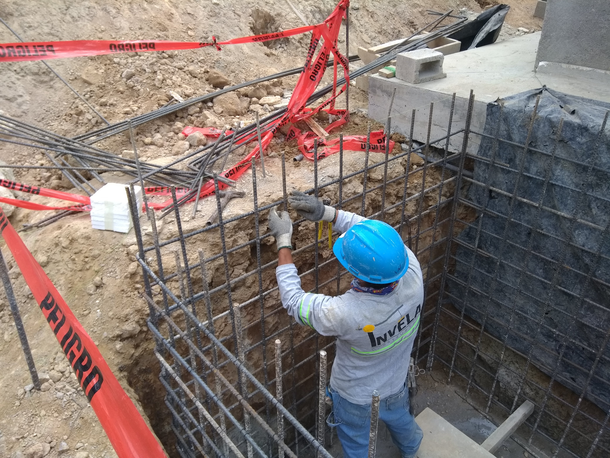
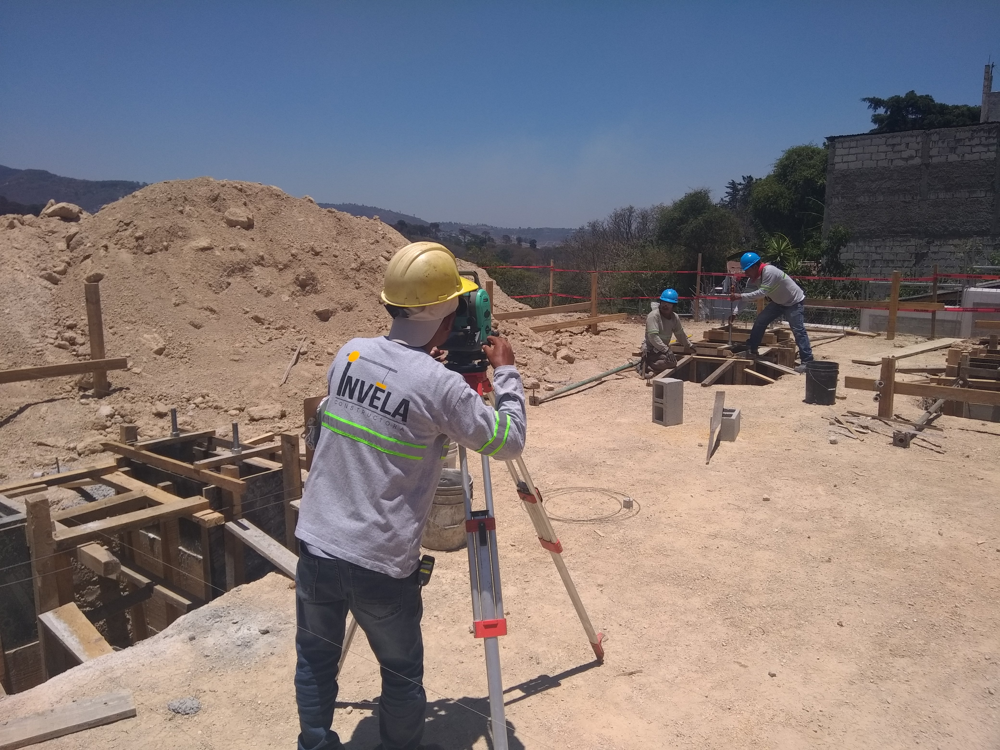
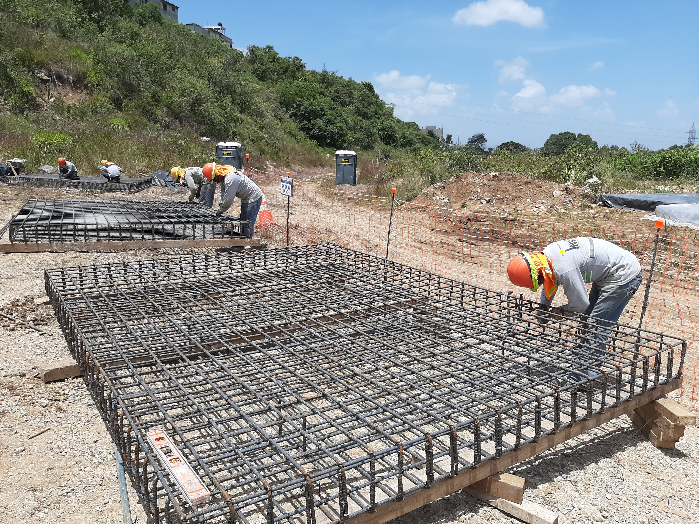
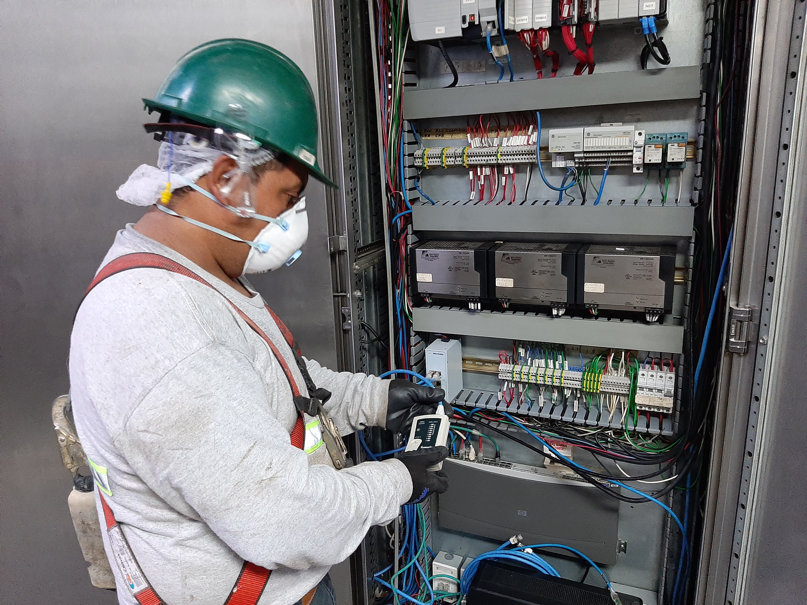

Servicios que
construyen futuro.
Desde la conceptualización hasta la entrega. Cada servicio respaldado por equipo propio, maquinaria y estándares internacionales.
Planificamos cada detalle antes de clavar el primer clavo.
Modelado BIM 3D, cronograma detallado y coordinación integral antes de iniciar obra. Detectamos conflictos y optimizamos el diseño.
- Modelado BIM 3D (Revit / ArchiCAD)
- Cronograma y presupuesto detallado
- Coordinación de especialidades
- Gestión de permisos y tramitología

Construimos desde los cimientos hasta la entrega de llaves.
Supervisión técnica permanente, control de calidad y equipo propio en obra. Cumplimos cronogramas y presupuestos establecidos.
- Residencial, corporativo e industrial
- Equipo técnico propio en obra
- Control de calidad
- Reportes de avance semanales

Infraestructura que conecta y transforma comunidades.
Vialidad, puentes, muros de contención y sistemas de drenaje. Obra pública y privada ejecutada con calidad.
- Puentes y pasos vehiculares
- Carreteras y pavimentos
- Sistemas de drenaje pluvial y sanitario
- Muros de contención y taludes

Diseñamos, fabricamos y montamos estructuras de alto rendimiento.
Fabricación en taller con control de calidad y montaje con equipo especializado propio.
- Diseño estructural con modelado BIM
- Fabricación en taller certificado
- Montaje con grúa y equipo propio
- Protección anticorrosión y pintura

Potencia y distribución eléctrica para proyectos de gran escala.
Subestaciones, tableros y armaduras. Diseño, suministro y montaje de sistemas de media tensión.
- Subestaciones de media y alta tensión
- Tableros de distribución industrial
- Armaduras y líneas de transmisión
- Sistemas UPS y generadores

Preparamos el terreno para que todo lo demás sea posible.
Excavaciones, cortes, rellenos y compactación con maquinaria pesada propia en terrenos complejos.
- Excavación y corte de terreno
- Relleno y compactación controlada
- Nivelación de plataformas
- Maquinaria pesada propia
Desarrollamos comunidades enteras desde cero.
Planificación y ejecución de proyectos de urbanización: lotes, vialidad, servicios y equipamiento urbano.
- Planificación urbana y lotificación
- Infraestructura de servicios completa
- Vialidad interna y aceras
- Áreas verdes y equipamiento